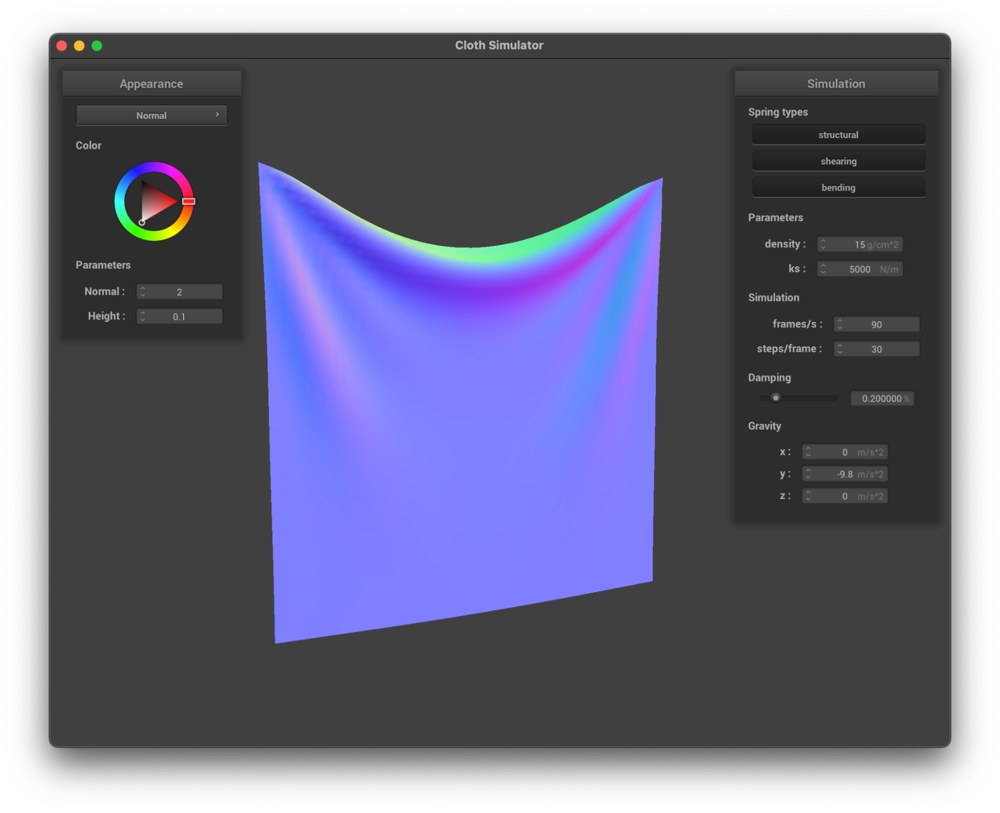
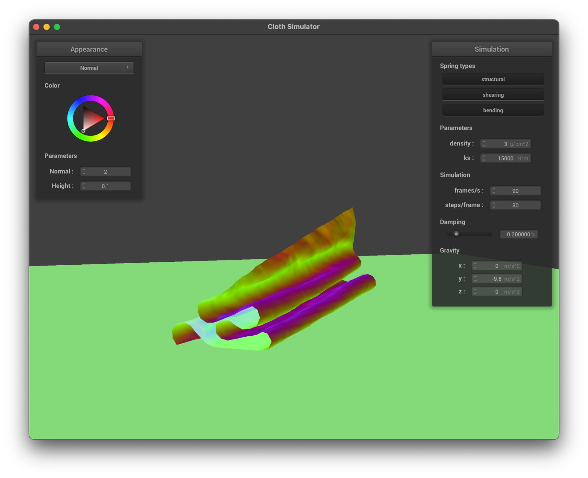

Project 4 Write-Up
By Sela Roach & Riddhi Bagadiaa
Link to Github pages: https://selaar.github.io/proj-webpage-template-airbears/
Overview An overview of the project, your approach to the various parts, what problems you encountered and how you solved them. Strive for clarity and succinctness.
In this project we used point masses and springs to create a grid that consists of structural, shearing, and bending constraints to simulate a cloth. Next, we applied forces on the cloth at many timestamps to actually simulate how the cloth interacts in the real world with physics. For example, we accumulated external forces utilizing gravity, mass, and acceleration. We also accumulated the spring correction forces per point mass which enabled the grid/cloth to stay connected despite the cloth moving, using Hooke’s law and Verlet integration which updated the point mass positions. These spring correction forces required applying a correction to the spring length if the spring length didn’t meet the deformation rate.
To make this cloth simulation realistic, we used the tangent point and correction vectors, to simulate the cloth correctly colliding into objects and used a hash table for collisions of itself. Lastly, we used the formulas of diffuse lighting, Blinn-phong shading, sampled uv coordinates from the texture map, and used the displaced model space normal into the Blinn-phong shading formula, updated the vertex positions with the model space normal vertex by the height scaling,used reflection and texture mapping, to model the shaders of diffuse shading, blinn-phong shading, texture mapping, bump mapping, displacement mapping, and environment-mapped reflections respectively.
Part 1
- Take some screenshots of scene/pinned2.json from a viewing angle where you can clearly see the cloth wireframe to show the structure of your point masses and springs.
- Show us what the wireframe looks like (1) without any shearing constraints, (2) with only shearing constraints, and (3) with all constraints.
- Without any shearing constraints

- With only shearing constraints
Part 2
- Experiment with some the parameters in the simulation. To do so, pause the simulation at the start with P, modify the values of interest, and then resume by pressing P again. You can also restart the simulation at any time from the cloth's starting position by pressing R.
- Describe the effects of changing the spring constant ks; how does the cloth behave from start to rest with a very low ks? A high ks?
- Low Ks:(500) Has more wrinkles of the fabric, less stiff
- High Ks:(50000):Slower, not as many wrinkles, more stiff
- Low density:(5) Little to no ripples of the fabric
- High density:(45) More ripples of the fabric as it falls down, more impact from forces
- Low damping(0.103):Darker in color, more wrinkles in fabric at the bottom. Fast in falling, slow rest state with cloth still shifting.
- High damping(0.8): Extremely slowly in falling, faster rest state
- For each of the above, observe any noticeable differences in the cloth compared to the default parameters and show us some screenshots of those interesting differences and describe when they occur.
- Overall, in comparison to the default parameters of density = 15, ks = 5000, and damping of 0.20%, we can see that KS plays a role with the stiffness of the cloth, the smaller one being less stiff and the larger one being more. Second, we can see that density which impacts the forces shapes the ripples of the fabric, especially as it falls down, a lower density having less ripples. Third, we can see that damping impacts the speed of the cloth falling and rest state, in that a higher damping is slow in falling but reaches a rest state faster.
- Low Density 5
- Damping 0.103
- Damping 0.8 - still falling when default is almost fully down at around the same time
- Show us a screenshot of your shaded cloth from scene/pinned4.json in its final resting state! If you choose to use different parameters than the default ones, please list them.
- With default parameters:
Part 3
- Show us screenshots of your shaded cloth from scene/sphere.json in its final resting state on the sphere using the default ks = 5000 as well as with ks = 500 and ks = 50000. Describe the differences in the results.
- Ks = 50000
- The overall difference is in stiffness, for example we can see from ks= 500, to ks= 5000, to ks = 50000, that there is a decrease in the number of folds in the cloth and less wrinkles, that in ks=50000, the cloth is stiff and is pointing outwards instead of draping down in a flowy manner.
- Show us a screenshot of your shaded cloth lying peacefully at rest on the plane. If you haven't by now, feel free to express your colorful creativity with the cloth! (You will need to complete the shaders portion first to show custom colors.)

Part 4
- Show us at least 3 screenshots that document how your cloth falls and folds on itself, starting with an early, initial self-collision and ending with the cloth at a more restful state (even if it is still slightly bouncy on the ground).
- Initial self-collision
- Restful state
- Vary the density as well as ks and describe with words and screenshots how they affect the behavior of the cloth as it falls on itself.
- Increase in density, increase in ks, (density = 45, ks = 15000)
- The fold are more laid on top of each other in an even manner, still wrinkly
- Decrease in density, decrease in ks (density = 3, ks = 1000)
- More flattening of the folds, faster in laying
- Increase in density, decrease in ks (density =45, ks = 1000)
- More layers and wrinkling
- Decrease in density, increase in ks (density = 3, ks = 15000)
- Super stiff, less layers, larger folds
Part 5
- Explain in your own words what is a shader program and how vertex and fragment shaders work together to create lighting and material effects.
- A shader program is a computer program written in a special language so that it runs in parallel on a computer’s GPU to create lighting and material effects. It is used in computer graphics, taking in an input and outputting a 4D vector.
- There are two basic shader types, fragment shaders and vertex shaders
- Fragment shaders - Fragment shaders are used to calculate the final color of each pixel on the screen, which gets stored in out_color. It uses the lighting information calculated by a vertex shader and material properties (color, texture, etc) to output the final 4D vector.
- Vertex shaders - Vertex shaders are used for transformations and modifying geometric properties. It transforms the vertices and points of a model to get their final position on the screen. This is written to gl_Position.
- Fragment shaders and Vertex shaders work together to find the position, lighting, color and texture of each pixel. Vertex shaders calculate the position and lighting, and the output of this shader becomes the input of the Fragment shader, which gives the pixel its color and texture.
- Explain the Blinn-Phong shading model in your own words. Show a screenshot of your Blinn-Phong shader outputting only the ambient component, a screen shot only outputting the diffuse component, a screen shot only outputting the specular component, and one using the entire Blinn-Phong model.
- The Blinn-Phong shading model is used to simulate the interaction between light and a surface by calculating the color of a point on the surface based on
- the normal vector
- a vector from the point to the viewer
- a vector from the point to the light source
The Blinn-Phong model uses the direction and angle between these vectors to compute the diffused component, ambient component and specular component. Each component plays an important role to make the texture and reflectance of the surface as realistic as possible.
- Show a screenshot of your texture mapping shader using your own custom texture by modifying the textures in /textures/.
- Show a screenshot of bump mapping on the cloth and on the sphere. Show a screenshot of displacement mapping on the sphere. Use the same texture for both renders. You can either provide your own texture or use one of the ones in the textures directory, BUT choose one that's not the default texture_2.png.
- Bump mapping on the cloth
- Bump mapping on the sphere
- Bump mapping on the cloth draped on the sphere
- Displacement mapping on the sphere
- Displacement mapping on the cloth draped on the sphere
- Compare the two approaches and resulting renders in your own words.
- Bump mapping modifies the normal vectors of an object by scaling it. This simulates bumps on the surface, making it more realistic. The increase in detail is due to the change in the height of the normals to make the surface slightly non uniform.
- Displacement mapping modifies the position of vertices according to a height map. Each point on the surface is modified by adding some height to it in the direction of the normal. This gives the surface a realistic 3D texture based on the texture map.
- The images above display the difference between bump and displacement mapping. Bump mapping has a more rough texture compared to no bump mapping. Displacement mapping emphasizes the unevenness of surface vertices further. Therefore, in the images, the brick texture looks 3D with displacement mapping, as if the sphere is made of real bricks.
- Compare how your the two shaders react to the sphere by changing the sphere mesh's coarseness by using -o 16 -a 16 and then -o 128 -a 128.
- Bump mapping -o 128 -a 128
- Displacement mapping -o 16 -a 16
- Displacement mapping -o 128 -a 128

Keeping everything else the same, changing the resolution from 16 to 128 makes the sphere more clear and detailed.
- Show a screenshot of your mirror shader on the cloth and on the sphere.